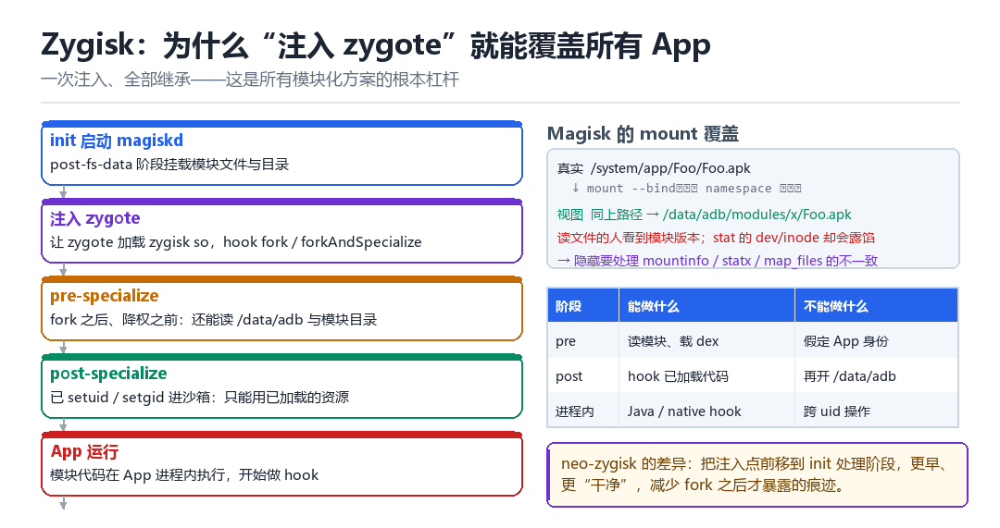

Android zygisk 原理
从 fork 到 Activity；magisk mount 与 neozygisk
一次注入、全部继承：这是模块化方案最漂亮的杠杆，也是最明显的靶子。
8.1 为什么盯着 zygote
所有 App 进程都是 zygote 的 fork 产物，并且继承它已加载的代码与已打开的 fd。只要在 zygote 里放一段代码，所有后续进程都会带着它出生——不需要逐个注入，不需要 ptrace 每个目标。

8.2 五个阶段
- init 阶段：
magiskd在 post-fs-data 时挂载模块文件，让模块资源“看起来”在系统里。 - 注入 zygote：让 zygote 加载 zygisk 的 so，并 hook
fork/forkAndSpecialize。 - pre-specialize：fork 之后、降权之前。此时还是 root 身份，能读
/data/adb和模块目录。 - post-specialize：已经 setuid/setgid 进入 App 沙箱，只能操作“已加载进内存”的东西。
- App 运行：模块代码在 App 进程里执行，开始做 Java/native hook。
| 阶段 | 能做什么 | 不能做什么 |
|---|---|---|
| pre-specialize | 读模块目录、加载 dex、改 rc | 假定自己已是 App 身份 |
| post-specialize | hook 已加载的代码、替换方法 | 再打开 /data/adb |
| App 进程内 | 业务层 hook、读写应用数据 | 跨 uid 直接访问 |
8.3 Magisk 的 mount 覆盖
Magisk 隐藏改动的核心手法是 mount：在目标进程的 mount namespace 里，用 mount --bind 把系统文件替换成模块里的版本。读文件的人看到的是模块版本，但 stat 返回的 st_dev / st_ino 还是原来的——这就是破绽所在。
cat /proc/self/mountinfo # 挂载树，看有没有可疑的 bind
stat -c '%d %i %n' /system/app/Foo/Foo.apk
ls -l /proc/self/map_files/ # 映射对应的真实文件8.4 neo-zygisk 的不同
neo-zygisk 的主要差异在于：把注入点前移到 init 进程处理的更早阶段。越早介入，fork 之后才产生的痕迹就越少，能控制的初始化顺序也越完整；代价是对系统版本的适配要求更高，出问题时的可观测性更差。
8.5 本章自测
- zygisk 为什么能“一次注入覆盖所有 App”？
- pre-specialize 与 post-specialize 的能力边界差在哪？
- mount 覆盖留下了哪两个可查的破绽？
- 如果让你设计一个模块系统，你会选择在哪个时机注入？为什么？
8.6 深入：specialize 到底做了什么
forkAndSpecialize 是 zygote 的核心接口。它在 fork 之后做了一长串“降权”动作：设置 uid/gid、补充组、设置 SELinux 上下文、切换 mount namespace、设置 rlimit、清空 capability。这些事情做完，进程才真正成为“某个 App”。
| 动作 | 结果 | 为什么是分界线 |
|---|---|---|
| setresuid/gid | 变成 App 的 uid | 之后读不到 /data/adb |
| setcon | 进入 untrusted_app 域 | SELinux 开始限制 |
| unshare mount ns | 看到 App 自己的挂载视图 | 模块文件的可见性变化 |
| capset | 清空 capability | 失去大部分内核特权 |
8.7 一个常被忽略的细节：进程名与 cmdline
fork 之后进程名会被改成目标包名，但 /proc/pid/cmdline 里仍然能看到 zygote 相关的痕迹（在 specialize 完成之前）。这个时间窗口很短，但如果检测方高频轮询，是能抓到的。
# 在 App 启动瞬间反复执行：
for i in $(seq 1 200); do
cat /proc/$PID/cmdline 2>/dev/null | tr '\0' ' '; echo
done8.8 原理推演：为什么“一次注入覆盖全部”在原理上成立
因为进程是“复制”出来的，不是“创建”出来的。fork 之后，子进程拥有与父进程完全相同的虚拟地址空间副本；如果父进程已经加载了某个 so，并且它的某个函数指针被改过，那么子进程继承的就是“已改过”的状态。
| 对象 | 是否被继承 | 说明 |
|---|---|---|
| 已加载的 so | 是 | 映射被复制 |
| 内存中的 hook | 是 | 指针值被复制 |
| 打开的文件 fd | 是（除非 CLOEXEC） | 引用计数 +1 |
| 线程 | 否 | 只有调用 fork 的线程存活 |
最后一项很关键：fork 只复制调用线程。所以如果你在 zygote 里起了一个后台线程做监控，fork 之后那个线程就不存在了——这是很多“注入了但没生效”问题的根源。
8.9 数据细节：zygote fork 之后子进程的线程数
# 在 zygote 里看：
ls /proc/$(pidof zygote64)/task | wc -l
# 在 App 里看：
ls /proc/self/task | wc -l
# 后者通常等于 1（加上后续创建的）8.10 工程权衡：pre 与 post 之间的状态怎么传递
pre-specialize 阶段读到的配置、加载的 dex，需要“带进”post 阶段。传递方式有三种：全局变量（最简单，但要注意 fork 后的可见性）、环境变量（会被子进程继承）、文件描述符（最灵活，但要处理 CLOEXEC）。
| 方式 | 优点 | 缺点 |
|---|---|---|
| 全局变量 | 简单直接 | 多线程时要注意同步 |
| 环境变量 | 天然继承 | 长度有限、可被读取 |
| fd 传递 | 灵活 | 要管理生命周期 |
一个 App 出生前的那零点几毫秒
把时间钉在 fork() 返回之后、setresuid() 执行之前。这个副本已经是一个独立进程，却还带着 zygote 的全部身份：uid 是 0，能读 /data/adb/modules，SELinux 还没切到 untrusted_app。再过几条指令，它就会被降权、改名、切 namespace，永远失去这个窗口。Zygisk 的全部设计，就是抢在这零点几毫秒里把该做的事做完。
更妙的是杠杆：不用逐个 App 注入，只要把一段代码放进 zygote，之后每一个 fork 出来的副本都会自带它。一次动手，全机覆盖。代价也同样明显——这段代码的痕迹会被复制到成百上千个进程里，任何一处不干净，检测方随便挑一个进程都能看到。
模块代码是怎么跟着 fork 一起被复制的
- `magiskd` 在 post-fs-data → 对模块目录 → 用
mount --bind把模块文件铺到系统视图里 → 结果：模块的 .so / dex 在文件系统层面「看起来」已就位。 - `magiskd` 注入 zygote → 对 zygote 进程 → ptrace 附加后
dlopen载入zygisk.so→ 结果：zygote 的地址空间里多了一段模块运行时，并在 JNI 层挂住nativeForkAndSpecialize。 - Java 层发起 fork → 对
Zygote.forkAndSpecialize→ 带着 uid、gid、seinfo、nice_name 等参数进来 → 结果：请求先经过被挂住的 JNI 入口，Zygisk 拿到preAppSpecialize回调。 - pre-specialize 回调 → 对仍是 root 的子进程副本 → 读模块配置、把 dex/so 路径备好、决定这个包要不要启用模块 → 结果：该读的文件在降权之前就读完了。
- 内核执行 specialize → 对新副本 → setresuid/setgid、
setcon、切 mount ns、清 capability、改进程名 → 结果：uid 变成u0_aNNN，untrusted_app域生效，/data/adb从此不可读。 - post-specialize 回调 → 对已降权的副本 → 只操作内存里已有的对象：hook 已加载的类、替换方法实现 → 结果：模块业务逻辑在 App 沙箱内开始运行。
- 需要特权时 → 对
magiskd的 companion 通道 → 由 App 进程发起请求，让特权侧代做文件操作 → 结果：沙箱里的模块仍能间接完成需要 root 的动作。
动手：让模块自己报出 specialize 前后的 uid
# 1) 用官方 zygisk-module-sample 模板，在 ModuleBase 里实现两个回调：
# preAppSpecialize -> __android_log_print(..., getuid(), getpid()) 打 pre
# postAppSpecialize -> 同样一行，打 post
# 2) NDK 编出 libzygiskmod.so，塞进模块 zip 的 zygisk/arm64-v8a/ 下
# 3) 管理器里安装、启用、重启，然后：
adb reboot && adb wait-for-device
adb logcat -c
adb shell am force-stop com.target.app
adb shell am start -n com.target.app/.MainActivity
adb logcat -d -s ZygiskMod:V | head -20
adb shell 'cat /proc/$(pidof com.target.app)/status' | grep -E '^(Name|Uid):'成功：logcat 里成对出现 pre uid=0 pid=NNN 与 post uid=10xxx pid=NNN，pid 相同、uid 不同——这一对日志就是 specialize 分界线的直接证据，也说明模块确实被复制进了 App 分支。失败分三种：只有 post，说明 dlopen 没进 zygote 或预加载被拦，模块压根没跑到 pre；看到的是 preServerSpecialize 相关日志，说明模块只挂到了 system_server 一路；两行 uid 都稳定在 1000 附近，那是 system_server 的 uid，不是普通 App，采样对象挑错了。注意 pre 里千万别去开 App 私有目录——那时上下文还没切完，SELinux 会拦。
| 现象 | 原因 | 排查方向 |
|---|---|---|
| pre/post 成对且 pid 相同 | 模块在 App 分支正常加载 | 成功，记下 uid 变化 |
| 只有 post | pre 回调没执行 / 未注入 zygote | 查 magiskd 日志与 zygisk.so 是否 dlopen |
| 只有 preServerSpecialize | 只覆盖 system_server | 检查模块声明与枚举分支 |
| pre 里读 /data/adb 失败 | 已在 post 阶段或 SELinux 拦下 | 把读操作前移到 pre |
| post 里再打开模块目录报 EACCES | 已降权，属预期行为 | 改走 companion 通道 |
这条「pre 读文件 / post 改内存」的分界线，第 05 章已经用 am start -W 和 Start proc 从外面量过一次，本章则是从里面把它打印出来；第 12 章讲 Java Hook 时，post-specialize 之后替换 ArtMethod 入口就是最典型的落地动作；第五部拆 LSPosed 时，会沿着本章的 companion 通道和模块加载顺序继续往里走。